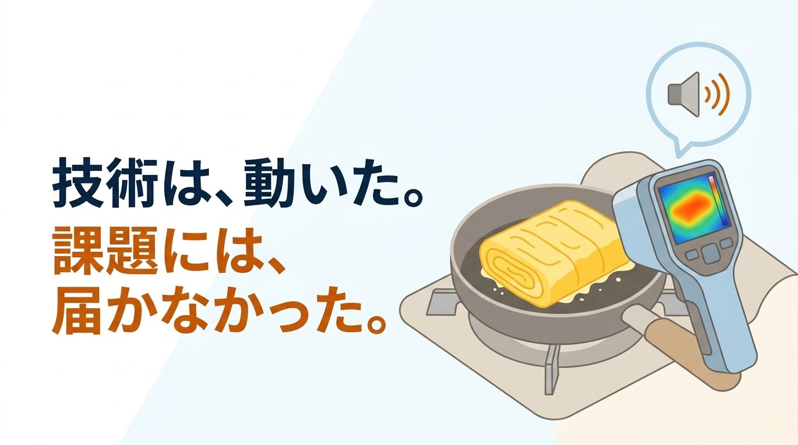

以前、飲食チェーンの「味のばらつき」を解決するシステムを試作したことがあります。結果は不採用でしたが、その理由が大きな学びになったので共有します。
発端は、信用金庫で聞いた雑談
職人の技が受け継がれないまま消えていく。信用金庫の方とそんな話をしていたときでした。「そういえば最近こんなことを言われたのですが」と、ひとつ話が出てきました。地方で複数店舗を展開している飲食チェーンからの声だといいます。
「人が入れ替わるたびに、味を揃えるのが難しい」。同じレシピを渡し、同じ材料を仕入れ、同じ手順書もある。それでも、作り手が変われば仕上がりに差が出てしまう。なかでも難しいのが日替わりメニューだといいます。定番メニューなら繰り返すうちに体が覚えますが、日替わりは今日初めて作るものを手順書だけを頼りに仕上げなければならず、慣れる時間がありません。お客さんはどの店に入っても同じ味を期待しているからこそ、経営する側は常にそこに気を配っています。
聞いているうちに、作れそうな形が頭に浮かびました。面白そうだ、作ってみたいとワクワクし、気が付いたら「案があるので、試しに作ってみてもいいですか」と申し出ていました。
「中火で3分」では、何も指定していない
最初はマニュアルをもっと丁寧にすれば解決すると考えました。写真を増やす、手順を細かく割る。しかしいくら丁寧にしても越えられない壁がありました。
「中火で3分」という指示は、一見具体的に見えて、実はほとんど何も指定していません。コンロが違えば中火の強さは違い、鍋の厚みや室温でも変わります。文字のレシピは「その人が、その環境で作ったときの再現手順」でしかなく、別の人が別の厨房で読んで同じ結果になる保証はどこにもないのです。
そこで発想を変えました。人によって解釈が変わる言葉ではなく、誰が見ても同じ値になるもので指示を出せないか。「中火で3分」ではなく「180度になったら卵を入れる」なら、環境が違っても同じ状態を再現できます。手をかざして確かめている「いい感じ」を、数字に置き換えられるかもしれない。そう考えました。
実際、フライヤーの油温や揚げ物・焼き物の中心温度を非接触のサーモグラフィカメラで常時モニタリングし、設定温度から外れると警告を出す仕組みが、大手チェーンの一部ではすでに導入されているといいます。
卵焼きで検証した
検証する料理には卵焼きを選びました。作りやすく、何度も試作しやすいこと。そして調べていくうちに、卵焼きは温度管理の精度が仕上がりに直結する料理だと分かったためです。温度が高すぎれば固くなり、低すぎれば水っぽくなる。「温度で味を揃える」という仮説を確かめるには、うってつけの題材でした。
装置は手元にあったもので組みました。手のひらに乗る小型デバイス（M5Stack CoreS3）に、オプションのサーモグラフィユニットを取り付け、調理器具の表面温度を触れずに測る仕組みです。正直、厨房の環境を細かく検討して選んだわけではなく、必要な機能が手元に揃っていたからという理由でした。実際に店舗へ導入するなら、画面が大きく扱いやすいタブレットの方が向いているとは思いますが、検証にはこれで十分でした（大手チェーンでは、手順通りに作業したかを確認する調理工程チェックも、タブレットのアプリに置き換わりつつあるようです）。
作った機能はシンプルです。画面に調理の手順が出て、同時に今のフライパンの温度と、あるべき基準温度が並んで表示される。数字が近づけば、正しい状態に向かっているのが分かります。ただそれだけだと、調理中ずっと画面を見続けることになり、手の塞がっている人間には現実的ではありません。そこでAIを組み合わせ、温度が基準から外れると「火が強すぎます」といった短い言葉を音声と表示で知らせるようにしました。職人の勘を、数字で直す。そういう装置を作ってみたかったのです。
返ってきた言葉で気づいたこと
自宅の台所でデモ動画を撮影し、限定公開のYouTube経由で先方に届けてもらいました。しばらくして返ってきたのは、こんな言葉でした。
「これは、日替わりには対応できないのではないか」
あらためて振り返って気づきました。もともとの課題は「日替わりメニューの味のばらつき」でした。それなのに、作り込んでいくうちに、私が作っていたのは「卵焼きをふわふわに焼く装置」になっていたのです。「誰が料理しても同様の味が提供できる」仕組みを作るはずが、いつの間にか課題そのものが書き換わっていることに、まったく気が付きませんでした。
仮説検証のために卵焼きを選んだところまでは間違っていませんでした。ですが作り込んでいくうちに、卵焼きをうまく焼くこと自体が目的になっていったのです。作りたいという気持ちが先行してしまったからこそ、作りたいものだけを作ってしまいました。作っている最中はまったく気づかず、むしろ、うまく動くたびに手応えを感じていたくらいです。指摘をもらって、ようやく自分がどこに向かっていたのかが見えました。
この経験から
もともと採用されればラッキーくらいの気持ちで始めた話だったので、落ち込みはありませんでした。それより、この気づきをもらえたことの方が収穫だったと今は思っています。
現場目線で考えられる設計者だと自負していましたが、今回は自分が作りたいものを作ってしまいました。作る前に、もっと現場を知る。当たり前のようで、自分から手を挙げた高揚感の中ではすっぽり抜け落ちてしまうのだと痛感しました。
この経験は、今の現場診断でも大切にしている姿勢につながっています。デジタルツインやIoTの導入では、技術的に面白いものを作ること自体が目的化しないよう、まず現場の本当の課題を丁寧に確認することを心がけています。